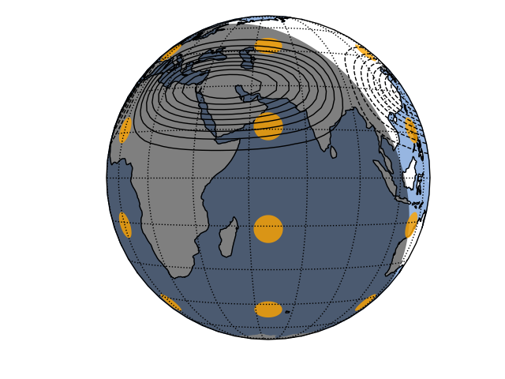

Note
Click here to download the full example code
Cartopy: Use Cartopy Features¶
import pygeode as pyg, numpy as np, pylab as pyl
from cartopy import crs as ccrs
import cartopy
from cartopy.feature.nightshade import Nightshade
from datetime import datetime as dt
lat = pyg.gausslat(60)
lon = pyg.regularlon(120)
x = pyg.sin(2*np.pi * lon / 180.) * pyg.exp(-(lat - 30)**2 / (2*10**2))
y = pyg.sin(2*np.pi * lon / 180.) * pyg.exp(-(lat + 40)**2 / (2*10**2))
pyl.ioff()
prj = dict(central_longitude = 60)
#ax = pyg.plot.CartopyAxes(projection = 'NearsidePerspective', prj_args = prj)
map = dict(projection = 'NearsidePerspective', prj_args = prj)
#map = dict(projection = 'LambertConformal', prj_args = prj)
cl = pyg.cldict(0.1, nozero=True)
ax = pyg.vcontour(x, map = map, **cl)
ax.add_feature(cartopy.feature.OCEAN)
ax.add_feature(Nightshade(dt.utcnow()))
ax.setp(title = '')
pyl.ion()
ax.render(2)
ax.ax.tissot(facecolor='orange', alpha=0.8)